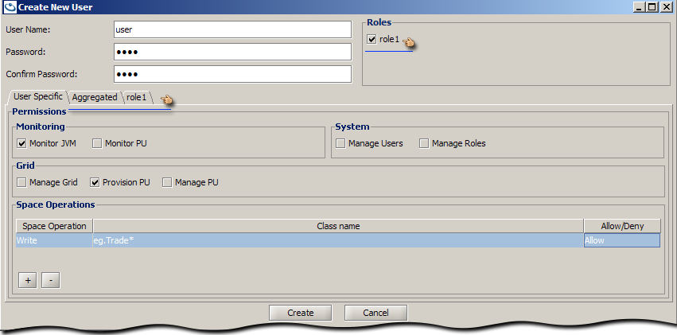
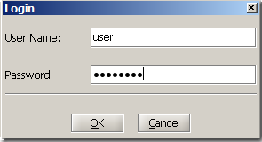
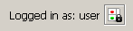
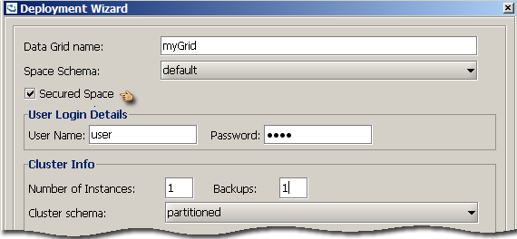
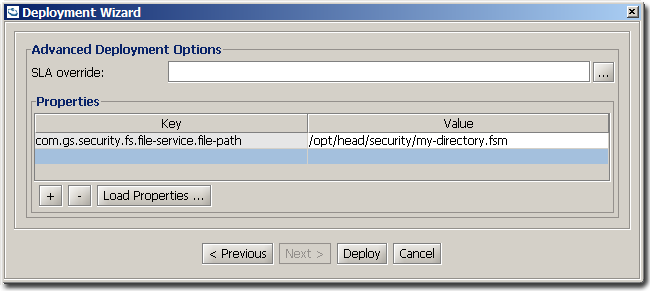
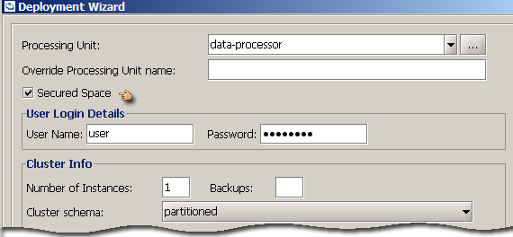

Section Summary: Security Administration using the GigaSpaces Management Center (UI)
Overview
GigaSpaces Management Center (UI) allows to manage the Grid services and Processing Units running within the Grid containers. When security is enabled, the UI will restrict access to these services for non-privileged users.
Administrators can use the UI to manage users and roles, and allow them to Login and operate based on their granted privileges.
 This section assumes familiarity with the Security Basics section.
This section assumes familiarity with the Security Basics section.
Managing Users and Roles
Managing the directory can be done directly through the DirectoryManager API. GigaSpaces Management Center utilizes this API and exposes a convenient administration interface for managing the users and roles supported by the backed directory implementation.
Our default file-based implementation allows the directory to be administered only if the user has Manage Users or Manage Roles privileges. When the directory is first created (i.e. directory file doesn't exist), only an admin/admin user may be allowed to access and administer the directory. By default, the admin holds both privileges which allows declaring of new roles, adding users and assigning of roles. The admin user can be deleted, as long as you provide another user with management capabilities.
Security Management dialog
There is no need for any service to be up and running. Just choose from the title menu bar Security -> Manage Security and the management dialog will open.

- Use Default Configuration - The defaults of the underlying implementation.
For example, the file-based implementation's defaults are to access/create a file located under <GigaSpaces root>/security/gs-directory.fsm.
- Security Properties File - Choose your configuration properties file that will configure the underlying implementation.
For example, to configure a different file-path for the file-based implementation.
- Administrator username and password - A user with Manage Roles or Manage Users privileges.
For first time usage of the file-based implementation, use admin/admin - This will create a new file with the admin user which only has directory management privileges.
Managing Users/Roles
This view is split into two tabs - Users and Roles. If you only have partial management roles, then only read-only actions are allowed.
Managing Users
The Users tab, displays a summary of all the users, their assigned roles, and user-specific privileges.
Double-click on the user to Edit it, or select a user and press one of the action buttons Edit, Duplicate, Delete.

Creating a new user
A user can be associated with predefined roles and be granted with user-specific privileges.
Associating a role
To associate a user with roles, choose the roles from the list of roles. Each associated role will appear in its own tab,
and the Aggregated view will show the aggregation of all the privileges (user-specific and roles).

User-specific privileges
To assign a Monitor Privilege, System Privilege, or Grid Privilege select the privilege check-box.
To assign Space Privilege rules, use the + button to add a row to the Space Operations table. This grants the user the privilege to perform a space operation on the specified Class/Package name. The Space Operation can be one of Write, Read, Take, Alter, or Execute which can be chosen from the drop-down. To restrict the operation to a certain class, specify a Class/Package name (wild-card) filter and choose Allow or Deny.
The following snapshot shows that the user has:
- Read privileges for all classes except for class eg.Stock
- Write privileges only for class eg.Trade

Managing Roles
The Roles tab, displays a summary of all the roles, its permissions and any assigned users to each role.
Double-click on the role to Edit it, or select a role and press one of the action buttons Edit, Duplicate, Delete.

Creating a new role
Creating a role is the same as creating a user with user-specific privileges. Except that these privileges can be associated by role-name to users.
The following role is set to have Monitor PU, Manage Grid, Provision PU, Manage PU, and a Space Operation rule allowing a Write of any class matching eg.Account*.

Login/Logout
There are two options to perform UI login - directly from the command line or from within the UI.
You may find the command line option convenient when using pre-defined scripts. Use the command line arguments -user and -password with the user credentials.
Usage:
gs-ui(.sh/.bat) -user user -password password
Login dialog
To login from within the UI, choose from the title menu bar Security -> Login and the login dialog will open.

In distributed systems, the login credentials are authenticated with each service. Thus, the indication of success or failure is specific to each.
The Authentication Monitor dialog appears when you press the OK button, but can also be viewed when pressing the  icon in the bottom-right corner of the screen (appears after Login).

- A service which has yet been logged into, or login has failed for, will appear as locked
 .
. - A service for which authentication was successful will be indicated as un-locked
 .
.
Logout
To logout, choose from the title menu bar Security -> Logout, which will cause a refresh of all discovered services.
Actions and Privilege restrictions
If the user lacks sufficient privileges, the UI displays a similar message to the following:

The following table represents some of the actions that the UI disables when there are insufficient privileges.
| Privileges | Actions |
|---|---|
| Provision PU | Deploy, Undeploy |
| Manage PU | Relocate, Restart PU, Add PU instance, Decrease PU Instance |
| Manage Grid | Start/Restart/Terminate GSA agents, Open Administration UI for GSM/GSC |
| Monitor PU | Viewing: Event Containers, Remote Services, Classes, Transactions, Statistics, Connections, PU details; Space View: Statistics, Objects and Templates count; Objects count in Cluster Graph View; Administration UI for PU Instance, Runtime Configuration Report |
| Monitor JVM | Used memory in Spaces View, Launch JConsole |
| Alter | Clean Space, Clean Cluster, Delete objects from Space |
| Take | Clear objects from space |
| any Space privilege | Query on space, Run benchmark |
Deployment Wizard
The Deployment Wizard allows the deployment of a data-grid or a processing unit. In both cases, a GSM needs to be selected from the available list of GSMs. If the GSM is locked, you will be requested to Login.

 It is important to understand the difference between the credentials supplied to the login dialog and the supplied credentials provided when deploying. The first, is used to authenticate the user against the services discovered by the UI, and allow actions to be performed. One of the actions is to deploy. When you are authorized to deploy, the credentials passed in the deployment dialog are propagated to the Processing Unit.
It is important to understand the difference between the credentials supplied to the login dialog and the supplied credentials provided when deploying. The first, is used to authenticate the user against the services discovered by the UI, and allow actions to be performed. One of the actions is to deploy. When you are authorized to deploy, the credentials passed in the deployment dialog are propagated to the Processing Unit.
Deploying a Secured data-grid
To deploy a secured data-grid, select the Secured Space checkbox. Supplying credentials is optional. If no credentials are supplied, a secured Space will be instantiated. If credentials are supplied, a secured Space will be instantiated, propagating the credentials to internal services (i.e. Space Filters).

Supplying custom properties
Security configuration properties can be supplied, during deployment of a Space, as custom properties; Either from a file or added through the dialog.
The custom properties can hold both space configurations and security configurations.

Deploying a Secured Processing Unit
To deploy a secured processing unit, select the Secured Space checkbox. As with a secured data-grid, supplying credentials is optional. The supplied credentials will be passed to the processing unit, to be propagated to the beans relying on the Space proxy.
For example, the data-processor has a polling container - when deployed, the credentials supplied need to meet the permissions required by the embedded processing units. In this case, a Take privilege. The data-feeder on the other hand, when deployed, needs Write privileges to write into the data-processor cluster.

Supplying bean level properties
Security configuration properties can be supplied, during deployment of a ProcessingUnit, as context bean level properties; Either from a file or added through the dialog.